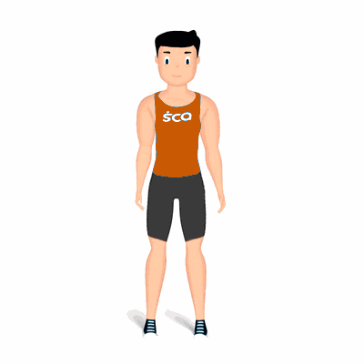

Ombro Lateral Esticado

Alongamento para os deltoides, com enfoque na parte anterior. Prepara os ombros para a atividade física.
Ficha Técnica
Tipo: Alongamento
Grupo Muscular: Ombro
Aparelho: Nenhum
Músculos: Nenhum
Como realizar
- Na posição em pé, coluna reta;
- Posicione os braços na lateral do corpo;
- Manter um dos braços estendidos e o outro traga para frente do corpo, na altura do peitoral;
- Com a outra mão, agarre a região do cotovelo trazendo o braço estendido o mais próximo do corpo;
- Manter a posição entre 20 a 30 segundos, ou por tempo orientado pelo professor;
- Após realizar com um braço, repita o alongamento com o outro.
 RC STORE
RC STORE